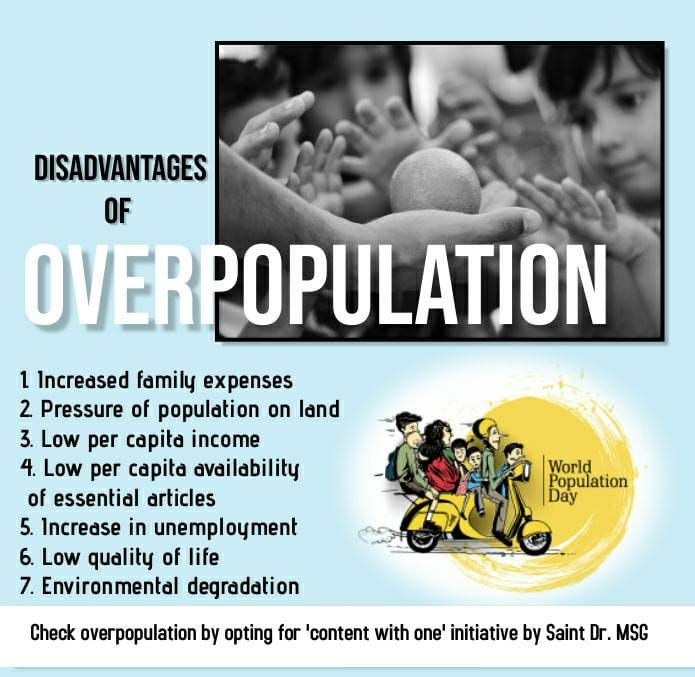

Overpopulation is the state whereby the human population rises to an extent exceeding the carrying capacity of the ecological setting. In an overpopulated environment, the numbers of people might be more than the available essential materials for survival such as transport, water, shelter, food or social amenities.

We personally think that overpopulation leads to many other problems,
when the population increases there is an increase in the demand of resources like wood,coal,metals,ores,energy.etc,lest
increasing problems like deforestation , pollution.etc.To solve this problem of overpopulation we must :
1.Educate people about this problems
2.Birth regulation laws should be made
3.Government should raise awarness
4.Improvement of family planning